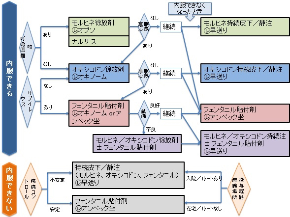
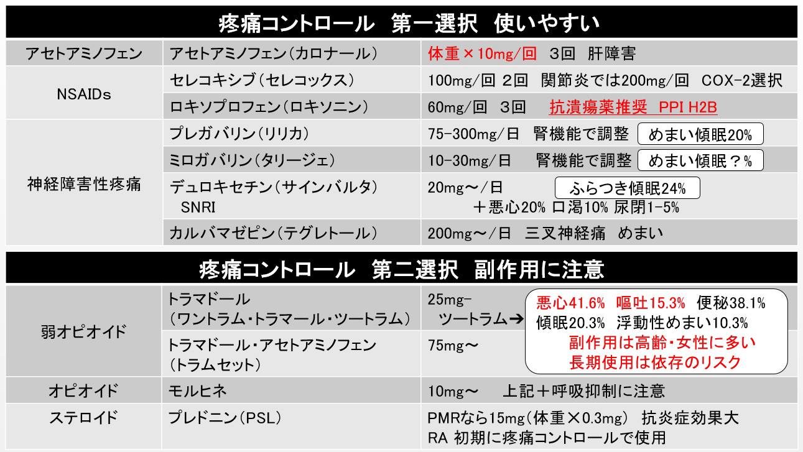

麻薬導入時は
便秘：マグミットやアミティーザ
嘔気：ノバミンも処方する

| オキシコドン錠 | 効果発言がはやい.効果は12h.腎機能低下でも使用可. |
| 経口モルヒネ | 初回投与量20mgから.効果は12h. |
| オプソ内服液 | レスキューとして使用可.効果は3-6h.内服後1h程度で緩和なければ追加内服. |
| モルヒネ点滴 | 5-10mg/dayを持続静注or皮下注(1mL/h以下). |
| メサペイン | 難治性がん疼痛に限定.致死性不整脈のリスク. |
| フェンタニルテープ | 効果は24hや72h.効果出現まではレスキュー薬で対応. |
↑切り替え時は最終の内服・注射と同じタイミングで貼付.
✔️突出痛に対するレスキュー薬
⭐︎経口モルヒネ換算30mg/day以上を定期使用した上で導入
フェンタニル錠
| イーフェン | 口腔粘膜吸収剤.4h以上空けて4回まで. |
| アブストラル | 舌下投与.2h以上空けて4回まで. |
✔️レスキュー薬のベースアップ
レスキューを4回/day以上使用する際はベースアップを検討．
ベースアップは旧ベースmg＋レスキューmgを新ベースとする．
✔️その他 弱オピオイド
| ソセゴン | 15mgを筋注or皮下注 |
| トラマドール | 50-150mgを筋注.100-300mg/4で内服 |
緩和におけるステロイド
腫瘍周囲の浸潤.癌性胸膜炎/腹膜炎.腫瘍による神経圧迫.に適応
ベタメタゾン（リンデロン）, デキサメタゾン（デキサート）